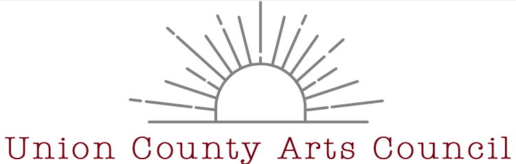

Design Challenge
The design challenge was to solve the design problem for a non-profit organization. This organization was UCAC, a non profit arts center. Click the button to learn more about my process!
The design challenge was to solve the design problem for a non-profit organization. This organization was UCAC, a non profit arts center. Click the button to learn more about my process!


My audience is mainly to a vast age range. My goals were to simply bring the Union community closer together. Click the button to read more!